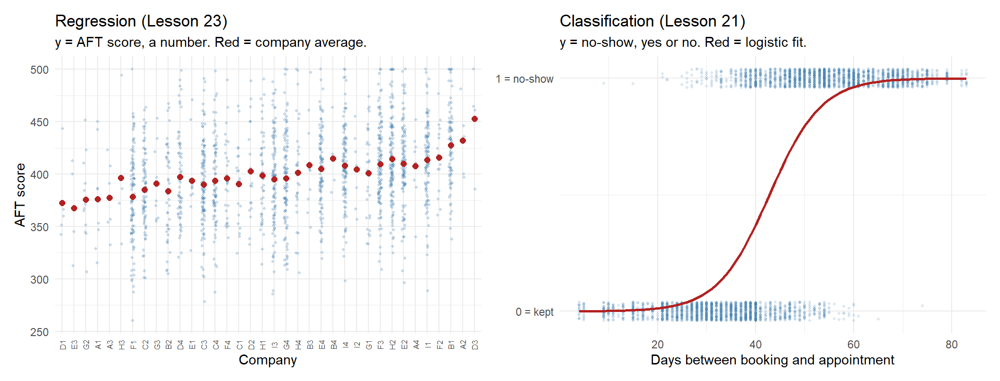
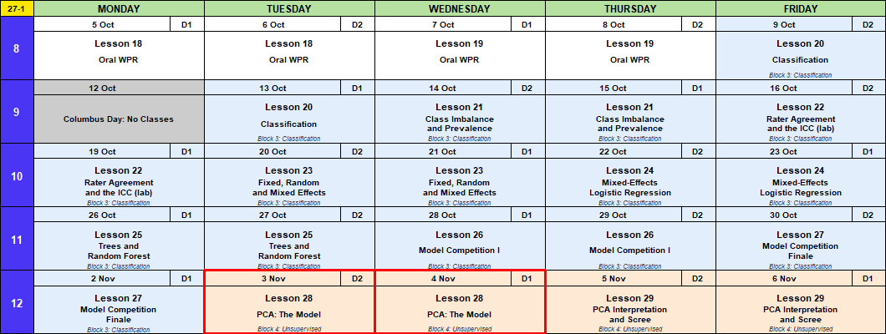
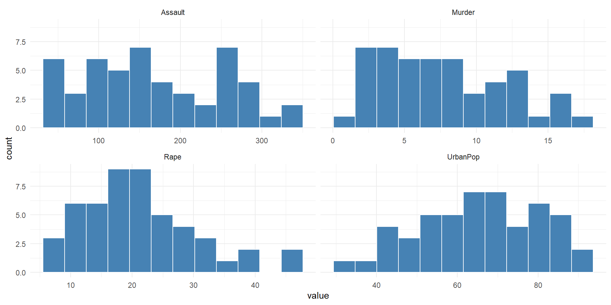
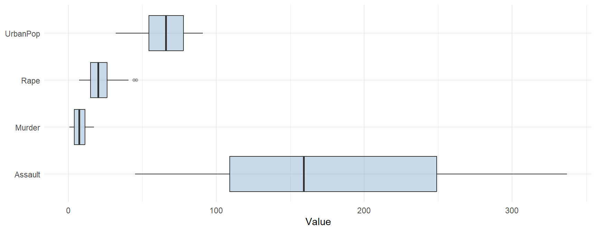
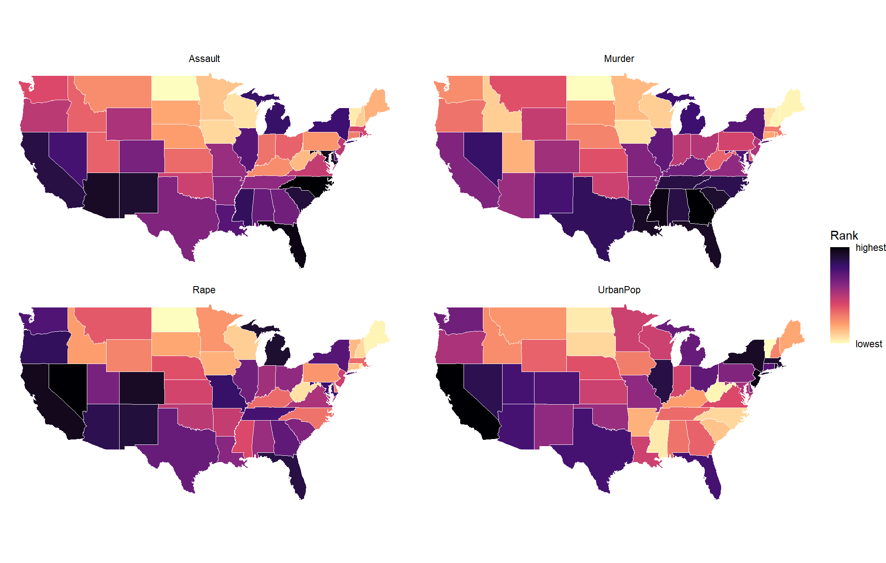
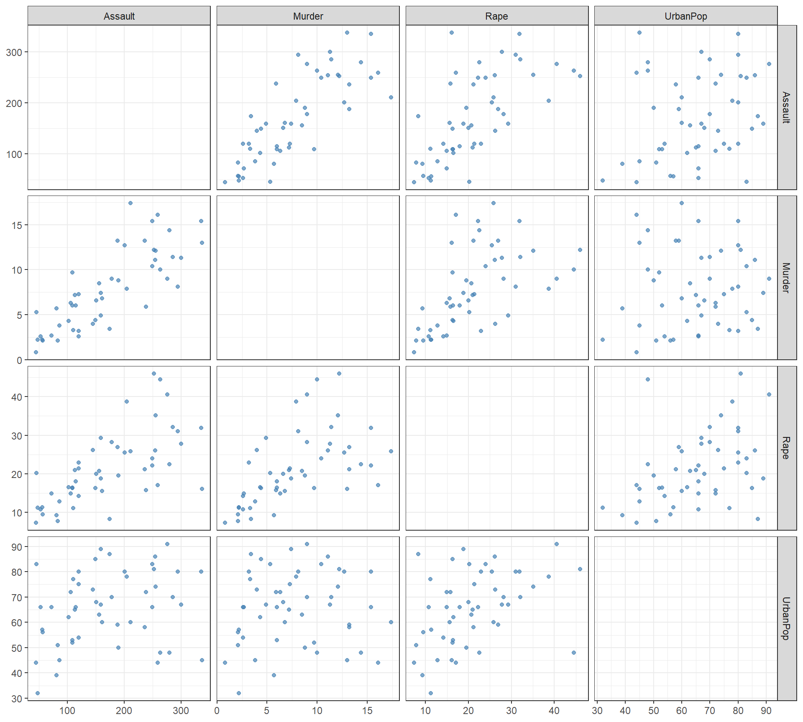
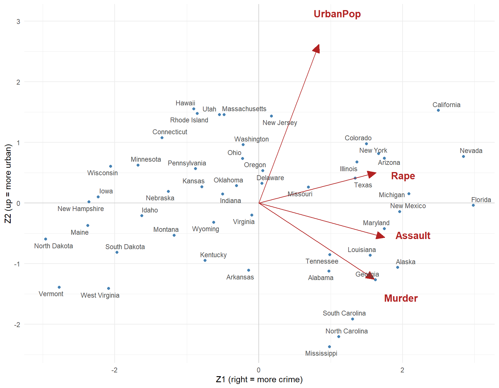

Lesson 28: PCA, the Model
Calendar

Admin
This Lesson
- Canvas page
- Board Sheet
- R Script
- Data:
USArrestsships with R. Nothing to download. - Reading: ISLR 12.1 through 12.2.1 (pages 495 to 501, stop at 12.2.2), plus Scaling the Variables (pages 505 to 506).
- Page 499 says “Table 12.2.1.” It means Table 12.1 on page 501.
Coming Up
- Lesson 29, PCA interpretation and the scree plot. BC2 Thu 5 Nov; A1, BC1 Fri 6 Nov. Read ISLR pages 503 to 505 and 507 to 508.
- Capstone Milestone 2: methodology and preliminary results. Due 2359 Friday 13 November, 60 points.
- Capstone final presentation. Lessons 37 and 38, 3 to 8 December, 100 points.
- I’m here through Lesson 29, 6 November.
TEE Slots
All TEE periods run 0730 to 1100. Find your name under your section.
NoteMA376 A1 14 (15 cadets)
| P1: Tue 15 Dec (8) | P4: Wed 16 Dec (7) |
|---|---|
| Anteen | Baron |
| Carroll | Fountain |
| Cole | Hardwick |
| Fonte | Rebolledo |
| Konopka | Shioutakon |
| Ploetz | Smith |
| Sun | Youmans |
| Toth |
NoteMA376 BC1 15 (14 cadets)
| P1: Tue 15 Dec (5) | P4: Wed 16 Dec (9) |
|---|---|
| Bode | Best |
| Lee | De La Torre |
| Ndiaye | Laub |
| O’Keefe | Loughman |
| Russell | Miranda |
| Nguyen | |
| Plummer | |
| Ward | |
| Weisenborn |
NoteMA376 BC2 16 (15 cadets)
| P1: Tue 15 Dec (4) | P4: Wed 16 Dec (11) |
|---|---|
| Gray | Applegate |
| Harris | Cannon |
| Van Kley | Ivey |
| Zhai | Johnson |
| Kendig | |
| Marino | |
| Myers | |
| Silverman | |
| Song | |
| Tullier | |
| Wittrock |
Break!
What We Did: Lessons 20 to 26
NoteReview: Judging a Classifier (Lesson 20)
| Truth positive | Truth negative | |
|---|---|---|
| Predicted positive | TP | FP, a false alarm |
| Predicted negative | FN, a miss | TN |
- Accuracy \(= \dfrac{TP + TN}{n}\)
- Sensitivity (recall) \(= \dfrac{TP}{TP + FN}\), specificity \(= \dfrac{TN}{TN + FP}\)
- Precision \(= \dfrac{TP}{TP + FP}\)
- \(F_1 = \dfrac{2\,TP}{2\,TP + FP + FN}\)
- Cut probabilities into labels at a threshold. \(0.5\) is a default, not a rule.
NoteReview: Class Imbalance and Prevalence (Lesson 21)
- Rare outcome: the null classifier scores \(1 - \text{prevalence}\), and a \(0.5\) threshold flags almost nothing.
- Three fixes: move the threshold, class weights (
glm(..., weights = w)), undersample. Each one moves the cutoff. None improves the model. - Sensitivity and specificity do not move with prevalence. Precision does.
- Report performance with the prevalence it was measured at.
NoteReview: Rater Agreement and the ICC (Lesson 22)
- Percent agreement \(p_o\). Chance agreement \(p_e = P(A)P(B) + P(A^c)P(B^c)\)
- Cohen’s kappa \(\kappa = \dfrac{p_o - p_e}{1 - p_e}\): agreement once you remove chance. Falls as prevalence moves to an extreme.
- \(\text{PABAK} = 2p_o - 1\): kappa with the prevalence set at half
- ICC \(= \dfrac{\hat\sigma^2_{\text{subject}}}{\hat\sigma^2_{\text{subject}} + \hat\sigma^2_{\text{rater}} + \hat\sigma^2_{\text{error}}}\), from a two-way ANOVA with raters as blocks
- Reliability is not validity: raters can agree and all be wrong.
NoteReview: Fixed, Random and Mixed Effects (Lesson 23)
- \(y_{ij} = \mu + u_j + \varepsilon_{ij}\), \(u_j \sim N(0, \sigma^2_u)\), \(\varepsilon_{ij} \sim N(0, \sigma^2)\)
lmer(y ~ 1 + (1 | group), data = d), thenfixef(),ranef(),coef()- \(\hat y_{ij} = \hat\mu + w_j(\bar y_j - \hat\mu)\), \(w_j = \dfrac{n_j}{n_j + \lambda}\), \(\lambda = \dfrac{\hat\sigma^2}{\hat\sigma^2_u}\): small groups shrink toward the average
- \(\text{ICC} = \dfrac{\hat\sigma^2_u}{\hat\sigma^2_u + \hat\sigma^2}\)
- Fixed: these levels are all you care about. Random: the levels are a sample of many.
NoteReview: Mixed-Effects Logistic Regression (Lesson 24)
- \(\log\dfrac{p_{ij}}{1 - p_{ij}} = \mu + u_j\), \(u_j \sim N(0, \sigma^2_u)\). No \(\varepsilon\): pass or fail is the noise.
glmer(y ~ x + (1 | group), family = binomial, data = d)predict(fit, newdata, type = "response", allow.new.levels = TRUE)glmwith a dummy per group: a group at 100% gets \(\hat\beta \to \infty\).glmershrinks it.- \(\text{ICC} = \dfrac{\hat\sigma^2_u}{\hat\sigma^2_u + \pi^2/3}\)
NoteReview: Trees and Random Forest (Lesson 25)
- A tree splits the data into boxes. Each split picks the predictor and cut that lowers Gini impurity the most.
- Gini for a box: \(G = 2p(1 - p)\). After a split, average the two boxes, weighted by size.
- A tree grown all the way memorizes the training data and does worse on new data. Limit it.
- Random forest: many trees, each on a bootstrap sample, each split choosing from
mtryrandom predictors. The forest votes. randomForest(y ~ ., data = train, ntree = , mtry = , nodesize = ); tune on out-of-bag \(F_1\).predict(fit, newdata, type = "prob")gives the share of trees that vote yes.- Variable importance says which predictors the forest leans on, not how.
NoteReview: Model Competition (Lesson 26)
- Six model types on the Memo 4 leads, scored on \(F_1\) of the
callcolumn. - Logistic at \(0.5\) calls nobody: about 97% accurate, \(F_1 = 0\).
- Tune the cut on
train(five-fold cross-validation) or on the forest’s out-of-bag votes. Never ontest. - Check on
test, then refit on all 12,000 before you predict the incoming leads. - Calls \(= TP + FP\). The recruiters can make 1,230.
What We’re Doing: Lesson 28
So Far: Supervised Learning
Every model since Lesson 1 had a response \(y\) and predictors \(x\). We used the \(x\)’s to model the \(y\).
| Lesson | \(y\) | \(x\)’s | Model |
|---|---|---|---|
| 23 | AFT score (a number) | company | lmer(score ~ 1 + (1 | company)) |
| 24 | rifle hit (yes or no) | distance, position, shooter | glmer(hit ~ dist100 + position + (1 | shooter)) |
| 21 | clinic no-show (yes or no) | days between booking and the appointment | glm(no_show ~ lead_days) |
| 25 | IOCT pass (yes or no) | height, weight, pull-ups, run, plank | randomForest(pass ~ .) |
| 26 | lead enlists (yes or no) | the Memo 4 lead columns | your choice |
- Regression: \(y\) is a number.
- Classification: \(y\) is a category.
- In every case we had the right answer for the training data.
- So we could check ourselves: test set error, accuracy, \(F_1\), a leaderboard.
- This is supervised learning. The \(y\) supervises.
What If We Don’t Have a \(y\)?
- Only \(x\)’s. Nothing to predict.
- No right answer, so no test set, no accuracy, no \(F_1\).
- ISLR (page 496): “there is no way to check our work because we don’t know the true answer.”
- This is unsupervised learning: Block 4.
- The goal is to find structure: which columns move together, which rows group together.
The Data: Crime in 50 States
USArrests ships with R. One row per state, 1973.
| Column | What it is |
|---|---|
Murder |
murder arrests per 100,000 residents |
Assault |
assault arrests per 100,000 residents |
UrbanPop |
percent of residents living in cities |
Rape |
rape arrests per 100,000 residents |
arrests <- as_tibble(USArrests, rownames = "state")
arrests# A tibble: 50 × 5
state Murder Assault UrbanPop Rape
<chr> <dbl> <int> <int> <dbl>
1 Alabama 13.2 236 58 21.2
2 Alaska 10 263 48 44.5
3 Arizona 8.1 294 80 31
4 Arkansas 8.8 190 50 19.5
5 California 9 276 91 40.6
6 Colorado 7.9 204 78 38.7
7 Connecticut 3.3 110 77 11.1
8 Delaware 5.9 238 72 15.8
9 Florida 15.4 335 80 31.9
10 Georgia 17.4 211 60 25.8
# ℹ 40 more rows- No \(y\). Four \(x\)’s and a state name.
Summary
arrests |>
pivot_longer(-state, names_to = "column") |>
group_by(column) |>
summarise(min = min(value), mean = mean(value), max = max(value), sd = sd(value))# A tibble: 4 × 5
column min mean max sd
<chr> <dbl> <dbl> <dbl> <dbl>
1 Assault 45 171. 337 83.3
2 Murder 0.8 7.79 17.4 4.36
3 Rape 7.3 21.2 46 9.37
4 UrbanPop 32 65.5 91 14.5 Each Column on Its Own
arrests |>
pivot_longer(-state, names_to = "column") |>
ggplot(aes(value)) +
geom_histogram(bins = 12, fill = "steelblue", color = "white") +
facet_wrap(~ column, scales = "free_x") +
theme_minimal()
All Four on One Axis
arrests |>
pivot_longer(-state, names_to = "column") |>
ggplot(aes(value, column)) +
geom_boxplot(fill = "steelblue", alpha = 0.3) +
labs(x = "Value", y = NULL) +
theme_minimal()
- What do you notice?
On a Map
states <- map_data("state") # the lower 48: no Alaska or Hawaii
arrests |>
mutate(region = str_to_lower(state)) |>
pivot_longer(c(Murder, Assault, UrbanPop, Rape), names_to = "column") |>
group_by(column) |>
mutate(rank = percent_rank(value)) |> # 0 = lowest state, 1 = highest
ungroup() |>
right_join(states, by = "region", relationship = "many-to-many") |>
filter(!is.na(column)) |>
ggplot(aes(long, lat, group = group, fill = rank)) +
geom_polygon(color = "white", linewidth = 0.2) +
coord_quickmap() +
facet_wrap(~ column) +
scale_fill_viridis_c(option = "magma", direction = -1, name = "Rank",
breaks = c(0, 1), labels = c("lowest", "highest")) +
theme_void()
Two Columns at a Time
long <- arrests |> pivot_longer(-state, names_to = "column", values_to = "value")
long |>
inner_join(long, by = "state", suffix = c("_x", "_y"), relationship = "many-to-many") |>
filter(column_x != column_y) |>
ggplot(aes(value_x, value_y)) +
geom_point(color = "steelblue", alpha = 0.7) +
facet_grid(column_y ~ column_x, scales = "free") +
labs(x = NULL, y = NULL) +
theme_bw()
arrests |> select(-state) |> cor() |> round(2) Murder Assault UrbanPop Rape
Murder 1.00 0.80 0.07 0.56
Assault 0.80 1.00 0.26 0.67
UrbanPop 0.07 0.26 1.00 0.41
Rape 0.56 0.67 0.41 1.00Who Is at the Top?
arrests |>
pivot_longer(-state, names_to = "column") |>
group_by(column) |>
slice_max(value, n = 3) |>
summarise(top_three = paste(state, collapse = ", "))# A tibble: 4 × 2
column top_three
<chr> <chr>
1 Assault North Carolina, Florida, Maryland
2 Murder Georgia, Mississippi, Florida, Louisiana
3 Rape Nevada, Alaska, California
4 UrbanPop California, New Jersey, Rhode Island How Can We Rank the States by Crime?
- Each crime crowns a different state: Georgia (Murder), North Carolina (Assault), Nevada (Rape).
- The three crimes overlap a lot: correlations from 0.56 to 0.80.
- We want one crime number per state. How do we combine them?
Try 1: Add Them Up
added <- arrests |> mutate(crime = Murder + Assault + Rape)
added |> slice_max(crime, n = 5)# A tibble: 5 × 6
state Murder Assault UrbanPop Rape crime
<chr> <dbl> <int> <int> <dbl> <dbl>
1 Florida 15.4 335 80 31.9 382.
2 North Carolina 13 337 45 16.1 366.
3 Maryland 11.3 300 67 27.8 339.
4 Arizona 8.1 294 80 31 333.
5 New Mexico 11.4 285 70 32.1 328.cor(added$crime, added$Assault)[1] 0.9966603- The ranking is just Assault.
- Assaults are counted in the hundreds, murders in single digits. The biggest units win.
Try 2: Scale, Then Average
averaged <- arrests |>
mutate(across(c(Murder, Assault, Rape), \(x) (x - mean(x)) / sd(x)),
crime = (Murder + Assault + Rape) / 3)
averaged |> slice_max(crime, n = 5)# A tibble: 5 × 6
state Murder Assault UrbanPop Rape crime
<chr> <dbl> <dbl> <int> <dbl> <dbl>
1 Florida 1.75 1.97 80 1.14 1.62
2 Nevada 1.01 0.975 81 2.64 1.54
3 Alaska 0.508 1.11 48 2.48 1.37
4 California 0.278 1.26 91 2.07 1.20
5 Michigan 0.990 1.01 74 1.48 1.16- Each crime is now in standard deviations, \(\dfrac{x - \bar x}{s}\), so no crime wins on units.
- But we picked the weights: one third each, and zero for UrbanPop.
- Why equal? Why leave UrbanPop out? How much does one number lose?
What We Want
- Let the data pick the weights.
- Know how much one number keeps, and what it misses.
- That is principal components analysis (PCA).
Principal Components
Try 2 built one new column, crime, as a weighted sum of the old columns, with weights we picked.
PCA builds new columns the same way, with weights the data picks. Each new column is a principal component.
\[ \begin{aligned} Z_1 &= \phi_{11}\,\text{Murder} + \phi_{21}\,\text{Assault} + \phi_{31}\,\text{UrbanPop} + \phi_{41}\,\text{Rape} \\ Z_2 &= \phi_{12}\,\text{Murder} + \phi_{22}\,\text{Assault} + \phi_{32}\,\text{UrbanPop} + \phi_{42}\,\text{Rape} \\ Z_3 &= \phi_{13}\,\text{Murder} + \phi_{23}\,\text{Assault} + \phi_{33}\,\text{UrbanPop} + \phi_{43}\,\text{Rape} \\ Z_4 &= \phi_{14}\,\text{Murder} + \phi_{24}\,\text{Assault} + \phi_{34}\,\text{UrbanPop} + \phi_{44}\,\text{Rape} \end{aligned} \]
What Each Piece Is
| Piece | What it is | In R |
|---|---|---|
| \(Z_1\) | A new column. One number per state, called its score. | pca$x[, 1] |
| \(\phi_{11}, \phi_{21}, \phi_{31}, \phi_{41}\) | The four weights that build \(Z_1\), called loadings. \(\phi_{21}\) is Assault’s weight in \(Z_1\). | pca$rotation[, 1] |
| \(\text{Var}(Z_1)\) | How spread out the 50 scores are. | summary(pca) |
- Each column is scaled first, \(\dfrac{x - \bar x}{s}\), like Try 2. No column wins on units, and every \(Z\) averages 0.
- Four columns in, four new columns out.
Fit PCA
pca <- prcomp(arrests |> select(-state), scale. = TRUE)
pca$rotation[, 1] <- -pca$rotation[, 1] # flip PC1 so more crime is higher
pca$x[, 1] <- -pca$x[, 1]
scores <- arrests |> bind_cols(as_tibble(pca$x))scale. = TRUEscales each column first.- R picks the sign of each component, and it made more crime negative. The two middle lines flip PC1 so higher is more crime. Flipping changes nothing else.
- R names the new columns
PC1toPC4.PC1is \(Z_1\): each state’s score on the first principal component.
scores |> slice_max(PC1, n = 6)# A tibble: 6 × 9
state Murder Assault UrbanPop Rape PC1 PC2 PC3 PC4
<chr> <dbl> <int> <int> <dbl> <dbl> <dbl> <dbl> <dbl>
1 Florida 15.4 335 80 31.9 2.98 -0.0388 0.571 -0.0953
2 Nevada 12.2 252 81 46 2.85 0.768 -1.15 0.311
3 California 9 276 91 40.6 2.50 1.53 -0.593 -0.339
4 Michigan 12.1 255 74 35.1 2.09 0.154 -0.381 0.101
5 New Mexico 11.4 285 70 32.1 1.96 -0.141 -0.182 -0.336
6 Alaska 10 263 48 44.5 1.93 -1.06 -2.02 -0.434 scores |> slice_min(PC1, n = 6)# A tibble: 6 × 9
state Murder Assault UrbanPop Rape PC1 PC2 PC3 PC4
<chr> <dbl> <int> <int> <dbl> <dbl> <dbl> <dbl> <dbl>
1 North Dakota 0.8 45 44 7.3 -2.96 -0.593 -0.298 -0.251
2 Vermont 2.2 48 32 11.2 -2.77 -1.39 -0.833 -0.143
3 Maine 2.1 83 51 7.8 -2.37 -0.373 0.0650 -0.327
4 New Hampshire 2.1 57 56 9.5 -2.36 0.0179 -0.0365 -0.0328
5 Iowa 2.2 56 57 11.3 -2.23 0.103 -0.163 0.0174
6 West Virginia 5.7 81 39 9.3 -2.09 -1.41 -0.104 0.131 - Most crime: Florida, Nevada, California. Least: North Dakota, Vermont, Maine.
How the Weights Are Chosen
What R chose, the 16 \(\phi\)’s, one set of four for each \(Z\) (columns scaled):
\[ \begin{aligned} Z_1 &= \phi_{11}\,\text{Murder} + \phi_{21}\,\text{Assault} + \phi_{31}\,\text{UrbanPop} + \phi_{41}\,\text{Rape} \\ Z_2 &= \phi_{12}\,\text{Murder} + \phi_{22}\,\text{Assault} + \phi_{32}\,\text{UrbanPop} + \phi_{42}\,\text{Rape} \\ Z_3 &= \phi_{13}\,\text{Murder} + \phi_{23}\,\text{Assault} + \phi_{33}\,\text{UrbanPop} + \phi_{43}\,\text{Rape} \\ Z_4 &= \phi_{14}\,\text{Murder} + \phi_{24}\,\text{Assault} + \phi_{34}\,\text{UrbanPop} + \phi_{44}\,\text{Rape} \end{aligned} \]
How R picks the \(\phi\)’s:
- The scaled columns each have variance 1, so the total is 4.
- \(\phi_{11}, \dots, \phi_{41}\): chosen so \(Z_1\) is as spread out as possible (biggest variance).
- \(\phi_{12}, \dots, \phi_{42}\): chosen so \(Z_2\) is as spread out as possible while staying uncorrelated with \(Z_1\).
- \(Z_3\) and \(Z_4\): the same, each uncorrelated with every \(Z\) before.
- For every \(Z\), its four \(\phi\)’s have squares summing to 1.
| \(Z_1\) | \(Z_2\) | \(Z_3\) | \(Z_4\) | Total | |
|---|---|---|---|---|---|
| Variance | 2.48 | 0.99 | 0.36 | 0.17 | 4 |
NoteWhy these rules?
- Squares sum to 1: without it, double every \(\phi\) and the variance doubles, so there would be no biggest.
- Uncorrelated: without it, \(Z_2\)’s best \(\phi\)’s would just be \(Z_1\)’s again.
PCA With Just Two Columns
Start small: PCA on only Murder and Assault, scaled.
\[ Z_1 = \phi_{11}\,\text{Murder} + \phi_{21}\,\text{Assault} \]
- The scaled columns each have variance 1, so the total is 2.
- \(\phi_{11}, \phi_{21}\): chosen so \(Z_1\) is as spread out as possible, with squares summing to 1.
- \(Z_2\): the line at a right angle, uncorrelated with \(Z_1\).
On the plot:
- Green arrow: \(\phi_{11}\) across, \(\phi_{21}\) up. Turning the line changes them.
- Gray lines: each state dropped onto the line. Where it lands is its \(Z_1\) score.
- Curve: \(\text{Var}(Z_1)\) at every angle.
Blue: states. Red: the line. Green: φ₁₁ and φ₂₁. Gray: each drop. Dashed: Z₂.
Var(Z₁) at every angle. The dot is the current line.
The 50 scores, Z, on a number line. Hover a dot for the state.
- Play tries every \(\phi_{11}, \phi_{21}\). The peak of the curve is \(Z_1\).
- Two scaled columns always peak at 45 degrees. Four columns do not.
Find the Weights: All Four Columns
Same idea, four columns. We cannot draw the line, but we can still drop every state onto it: that is the strip.
- Sliders: set \(\phi_{11}, \phi_{21}, \phi_{31}, \phi_{41}\). The page rescales them so the squares sum to 1.
- Strip: each state’s \(Z_1\) score. Wider means more spread.
- Try it: just Murder, just Assault, equal crimes. Then try to beat them.
Var(Z₁) out of the total 4. Black tick: the best you have found.
The 50 scores. Florida is black. Hover a dot for the state.
- The best is about equal on the three crimes and less on UrbanPop: R’s \(Z_1\). Equal crimes (Try 2) gets close.
- \(Z_2\) would be the same game, using only weights uncorrelated with \(Z_1\).
- R does not slide. It solves for the weights directly: next section.
How R Finds the Loadings
R does not search. It uses the eigen system of the correlation matrix:
e <- eigen(cor(arrests |> select(-state)))
dimnames(e$vectors) <- dimnames(pca$rotation) # label the rows and columnsEigenvalues = the variances of the \(Z\)’s:
e$values[1] 2.4802416 0.9897652 0.3565632 0.1734301pca$sdev^2[1] 2.4802416 0.9897652 0.3565632 0.1734301Eigenvectors = the loadings:
e$vectors PC1 PC2 PC3 PC4
Murder -0.5358995 0.4181809 -0.3412327 0.64922780
Assault -0.5831836 0.1879856 -0.2681484 -0.74340748
UrbanPop -0.2781909 -0.8728062 -0.3780158 0.13387773
Rape -0.5434321 -0.1673186 0.8177779 0.08902432pca$rotation PC1 PC2 PC3 PC4
Murder 0.5358995 -0.4181809 0.3412327 0.64922780
Assault 0.5831836 -0.1879856 0.2681484 -0.74340748
UrbanPop 0.2781909 0.8728062 0.3780158 0.13387773
Rape 0.5434321 0.1673186 -0.8177779 0.08902432- Same numbers.
- Some columns have the opposite sign. A \(Z\) and its mirror image spread the same, so either sign is right.
Reading the Loadings
pca$rotation PC1 PC2 PC3 PC4
Murder 0.5358995 -0.4181809 0.3412327 0.64922780
Assault 0.5831836 -0.1879856 0.2681484 -0.74340748
UrbanPop 0.2781909 0.8728062 0.3780158 0.13387773
Rape 0.5434321 0.1673186 -0.8177779 0.08902432The loadings fill in the formulas (each column scaled):
\[ \begin{aligned} Z_1 &= 0.536\,\text{Murder} + 0.583\,\text{Assault} + 0.278\,\text{UrbanPop} + 0.543\,\text{Rape} \\ Z_2 &= - 0.418\,\text{Murder} - 0.188\,\text{Assault} + 0.873\,\text{UrbanPop} + 0.167\,\text{Rape} \\ Z_3 &= 0.341\,\text{Murder} + 0.268\,\text{Assault} + 0.378\,\text{UrbanPop} - 0.818\,\text{Rape} \\ Z_4 &= 0.649\,\text{Murder} - 0.743\,\text{Assault} + 0.134\,\text{UrbanPop} + 0.089\,\text{Rape} \end{aligned} \]
Read each \(Z\) by its biggest weights:
| Biggest weights | A high score means | Highest | Lowest | Share | |
|---|---|---|---|---|---|
| \(Z_1\) | all three crimes, about 0.55 each | more crime overall | Florida, Nevada | North Dakota, Vermont | 62.0% |
| \(Z_2\) | UrbanPop 0.87, Murder -0.42 | more urban, fewer murders | Hawaii, California | Mississippi, North Carolina | 24.7% |
| \(Z_3\) | Rape -0.82 | no clear meaning | Rhode Island, North Carolina | Alaska, Nevada | 8.9% |
| \(Z_4\) | Murder 0.65, Assault -0.74 | no clear meaning | Georgia, Hawaii | North Carolina, Delaware | 4.3% |
- \(Z_1\) and \(Z_2\) carry most of the spread and have clear meanings: crime and urban.
- \(Z_3\) and \(Z_4\) are small leftovers. More on how many to keep in Lesson 29.
How Much Does Each Keep?
summary(pca)Importance of components:
PC1 PC2 PC3 PC4
Standard deviation 1.5749 0.9949 0.59713 0.41645
Proportion of Variance 0.6201 0.2474 0.08914 0.04336
Cumulative Proportion 0.6201 0.8675 0.95664 1.00000- Proportion of Variance: the variance of each \(Z\) column as a share of the total. More in Lesson 29.
- \(Z_1\) alone keeps 62.0%. \(Z_1\) and \(Z_2\) together keep 86.8%.
Back to the Ranking
Rank the states on \(Z_1\), next to equal weights on the three crimes:
scores |>
mutate(equal_crimes = averaged$crime) |>
slice_max(PC1, n = 5) |>
select(state, PC1, equal_crimes)# A tibble: 5 × 3
state PC1 equal_crimes
<chr> <dbl> <dbl>
1 Florida 2.98 1.62
2 Nevada 2.85 1.54
3 California 2.50 1.20
4 Michigan 2.09 1.16
5 New Mexico 1.96 1.12cor(scores$PC1, averaged$crime)[1] 0.985298- Almost the same ranking as equal weights on the crimes.
- The difference: the data picked these weights, and we know \(Z_1\) keeps 62.0%.
Four Columns, Two Numbers
arrows <- as_tibble(pca$rotation, rownames = "variable") |> mutate(PC1 = 3 * PC1, PC2 = 3 * PC2)
ggplot(scores, aes(PC1, PC2)) +
geom_hline(yintercept = 0, color = "gray80") +
geom_vline(xintercept = 0, color = "gray80") +
geom_point(color = "steelblue") +
geom_vector(data = arrows, aes(x = 0, y = 0, fx = PC1, fy = PC2, color = I("firebrick")),
center = FALSE, normalize = FALSE, inherit.aes = FALSE, show.legend = FALSE) +
geom_text_repel(data = bind_rows(scores |> mutate(label = state, type = "state"),
arrows |> mutate(label = variable, type = "column",
PC1 = 1.15 * PC1, PC2 = 1.15 * PC2)),
aes(label = label, color = type, fontface = if_else(type == "column", "bold", "plain"),
size = type), max.overlaps = 50, show.legend = FALSE) +
scale_color_manual(values = c(state = "gray30", column = "firebrick")) +
scale_size_manual(values = c(state = 3, column = 4.5)) +
labs(x = "Z1 (right = more crime)", y = "Z2 (up = more urban)") +
theme_minimal()
- Dots: each state’s \(Z_1\) and \(Z_2\) scores. Arrows: each column’s loadings (stretched 3x to show).
- The three crime arrows point right together. UrbanPop points up, on its own.
- California and Mississippi: both high crime. California is urban, Mississippi is not.
biplot(pca, scale = 0)draws the same picture in base R. That is the ISLR lab.
What Did It Get Us?
- One crime number, with weights the data picked: \(Z_1\) keeps 62.0%.
- Add \(Z_2\) (how urban) and two numbers keep 86.8%.
- Scale first, or \(Z_1\) is just the column with the biggest units.
- No \(y\), so nothing says these components are “right.” You judge them by whether they make sense.